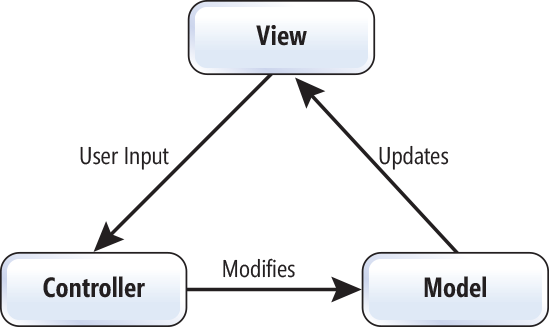
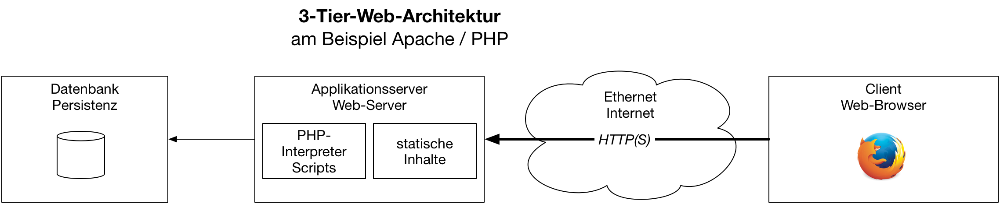
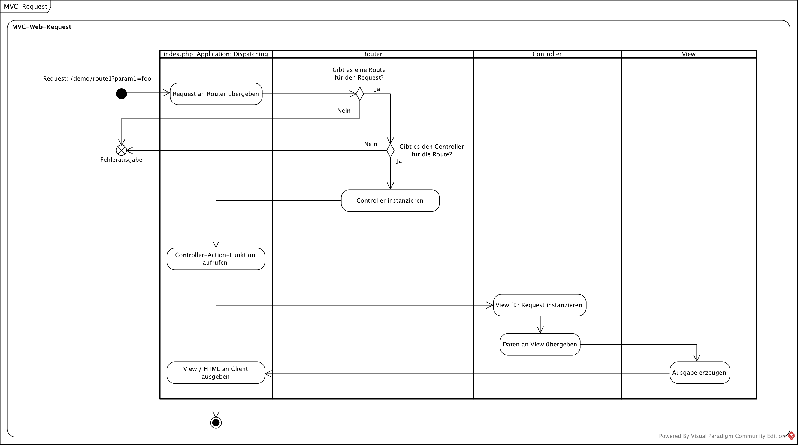
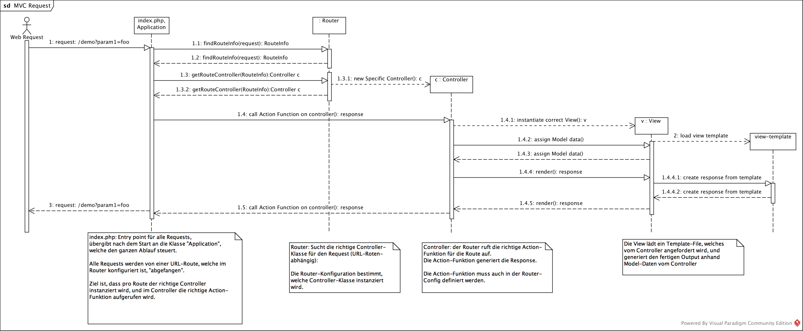
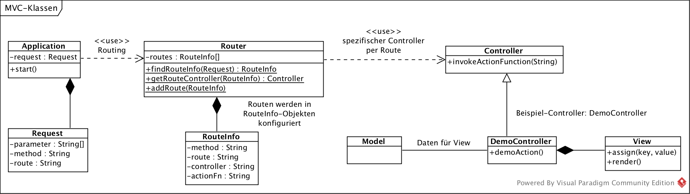

{% extends "../_base_template.html" %}
{% block title %}Lektion 3 - Web-MVC-Architektur{% endblock %}

{% block sections %}
<section data-markdown>
<textarea data-template>
<i class="fas fa-graduation-cap"></i> M151 - DB in Web-App einbinden
=============================

Heutiges Ziel
--------------

* Sie kennen die Begriffe "Routing", "Controller", "Action-Methode", "View"
* Sie kennen die Aufgabe des Routings und der Controller
* Sie können das Basis-MVC-Gerüst selbständig programmieren
</textarea>
</section>

<section data-markdown>
<textarea data-template>
<i class="fas fa-graduation-cap"></i> Web-MVC-Framework
=============================

Wir erinnern uns: Das MVC-Design-Pattern teilt die Verantwortlichkeiten von Code in:

* **M**odel (Daten)
* **V**iew  (Ansicht)
* **C** (Logik)

<div></div>

<i class="far fa-hand-point-right"></i> Wie passt dies nun in die Web-Architektur?

<div></div>

* Was / Wo sind die **Models**?
* Was / Wo sind die **Views**?
* Was / Wo sind die **Controller**?
</textarea>
</section>

<section>
<section data-markdown>
<textarea data-template>
<i class="fas fa-graduation-cap"></i> Web-MVC-Framework
=============================

Wir betrachten MVC aus Sicht des **Applikationsservers** unserer Standard-Architektur:


* Die **Models** sind etwelche Daten aus einer Datenbank.
* Die **Views** sind Antworten vom Server, die der Browser darstellt: Sie werden von der Business Logik / den Controllern ausgeliefert (z.B. als HTML-Seite)
* Die **Controller** sind die "Empfänger" von HTTP-Requests: Sie stellen die Verbindung zwischen Daten, und Views her, sie stellen die Business-Logik zur Verfügung.
</textarea>
</section>

<section data-markdown>
<textarea data-template>
<i class="fas fa-graduation-cap"></i> Web-MVC-Framework
=============================

Wir beschäftigen uns als Erstes mit dem **C** in MVC: den **Controllern.** Sie implementieren die Logik / Verbindung zwischen View und Model.

<i class="fas fa-bullseye"></i> Unsere Ziele:

* Jede URL / jede **Route** soll von einer Funktion (Methode) abgehandelt werden.
* Wir "sammeln" zusammengehörige **Methoden in einer Klasse**
* Das Framework soll die URL einer Klasse / Methode zuordnen können

Diesen Vorgang, also die Zuordnung von URL zu Klasse und Methode, nennen wir <i class="far fa-hand-point-right"></i> **Routing**.<br />
Solche Klassen nennen wir **Controller**, die verantwortlichen Methoden **Action-Methoden**.

**Beispiel: Eine Controller-Klasse für User-bezogene URLs:**

```php
class UserController {
    // URL-Route: GET /users/
    public function list() {
        // .... Action-Methode, listet die vorhandenen User
    }

    // URL-Route: POST /users/create
    public function create($username) {
        // .... Action-Methode, erstellt einen User
    }

    // URL-Route: DELETE /users/delete?username=hans
    public function delete($username) {
        // .... Action-Methode, löscht einen User
    }
}
```

**Ziel ist, dass unsere Requests in einer dafür vorgesehenen Methode in einer Controller-Klasse landen**, also richtig "geroutet" werden.<br /> Wie können wir dies bewerkstelligen?

</textarea>
</section>
</section>

<section>
<section data-markdown>
<textarea data-template>
<i class="fas fa-graduation-cap"></i> Ablauf eines Requests an den Server (Backend)
=============================

**Ziel: Der Requests vom Client führt eine dafür vorgesehene Methode in einer Controller-Klasse aus**.


Unser MVC-Framework setzt dies in folgenden Schritten um:

**1. Dispatching: Start, Einstiegspunkt**

Alle Requests landen an einem Entry Point (index.php): Aufgabe dieses Entry Points ist es, das MVC-Framework
„in Gang“ zu bringen: Der Request wird soweit analysiert, um das Routing (Schritt 2) anzustossen: URL extrahieren, Parameter auslesen etc.

**2. Routing: Controller/Action aufrufen**

„Routing“ nennt man das Zuweisen einer URL-Route (eines URL-Pfades) zum richtigen Controller / zur richtigen Action-Funktion. Ein Router entscheidet anhand des Requests, welcher Controller diesen Request abarbeiten wird. Der Router wird im Dispatching instanziert / abgefragt.

Der Router nimmt folgende Parameter des Requests für die Ermittlung der Route:
* den URL-Pfad der angeforderten URL (z.B. „/personen/list“)
* Die HTTP-Methode (z.B. „GET“)
* weitere HTTP-Parameter (z.B. `?id=5&name=alex`)

</textarea>
</section>

<section data-markdown>
<textarea data-template>
<i class="fas fa-graduation-cap"></i> Ablauf eines Requests
=============================

**Ziel: Der Requests vom Client führt eine dafür vorgesehene Methode in einer Controller-Klasse aus**.


**3. Controller: Request abhandeln**

Nachdem der Controller gefunden wurde, übergibt das Dispatching die Kontrolle an ihn, resp.
an die richtige Action-Funktion.
Im Normalfall handelt eine Controller-Klasse mehrere Routen ab (z.B. alle Routen, um denen es um Personen-Requests geht),
und innerhalb des Controllers wird pro Route eine „Action-Funktion“ aufgerufen, eine Funktion, welche den Request
tatsächlich behandelt.

**4. View: Output generieren (z.B. HTML)**

Es ist nun die Aufgabe der Action-Funktion im Controller, die notwendige Business-Logik umzusetzen:
Sie sucht die für den Request notwendigen Daten zusammen (Model), und instanziert eine View-Klasse.
Die View-Klasse sorgt für die Aufbereitung der Daten in das Ausgabe-Format (z.B. in HTML).

**5. Ausgabe an den Client**

Nachdem die View den Output generiert hat, wird dieser an den Client ausgegeben. Der Request ist somit mit einer Response beantwortet und damit abgeschlossen.

</textarea>
</section>
</section>

<section data-markdown>
<textarea data-template>
<i class="fas fa-graduation-cap"></i> Ablauf eines Requests - als Aktivitätsdiagramm
=============================



</textarea>
</section>

<section>
<section data-markdown>
<textarea data-template>
<i class="fas fa-graduation-cap"></i> Umsetzung in unserem Applikations-Skelett
=============================

Wir haben das Applikations-Skelett bereits in Betrieb genommen: Unser `index.php`-File nimmt bereits **alle** Requests entgegen, welche nicht auf ein richtiges File zeigen.
Dies ist unser Applikations-Einstieg, unser **Dispatching**. Hier **beginnt** unsere Applikation:

```php
<&#x200b;?php
# index.php --- Dies ist unser "Dispatcher"

# lade composer autoloader:
require_once(__DIR__.'/vendor/autoload.php');

# extrahiere URL-Route:
$path_info = isset($_SERVER['PATH_INFO']) ? $_SERVER['PATH_INFO'] : '/';

# extrahiere weitere Request-Parameter:
$request_params = $_REQUEST;

/**
 * Schritt 1: Routen konfigurieren (welche Routen bieten wir an?)
 *            --> Das Routing muss Auskunft darüber geben, welche URL an welchen Controller/Methode geschickt wird
 * Schritt 2: Anhand der Route den richtigen Controller instanzieren
 * Schritt 3: Im instanzierten Controller die richtige Methode aufrufen
 * Schritt 4: Diese Methode stellt die Business-Logik dar und generiert die View in Form einer HTML-Antwort
 */
```
</textarea>
</section>

<section data-markdown>
<textarea data-template>
<i class="fas fa-graduation-cap"></i> Umsetzung in unserem Applikations-Skelett
=============================

Aufgabe
---------

Versuchen Sie nun, folgendes programmatisch umzusetzen:

* **Routen definieren**: Der Router hat 2 Aufgaben:
  * Definieren / konfigurieren der Routen, also welche URL gehört zu welcher Klasse/Methode
  * Die richtige Klasse/Methode anhand einer gegebenen URL finden

  Wie und wo bewerkstelligen Sie dies? Welche Datenstruktur ist geeignet, um anhand einer URL den richtigen Controller / die richtige Methode zu finden?<br />
  <i class="far fa-hand-point-right"></i> Entwerfen Sie hierzu eine Klasse / eine Klassen-Struktur!<br />

* **Controller finden und instanzieren**: Programmieren Sie die Logik, um anhand der angeforderten URL den richtigen Controller zu finden / zu instanzieren.
* **Action-Methode aufrufen**: Programmieren Sie die Logik, um schlussendlich die richtige Methode im instanzierten Controller aufzurufen.
* **Ziel:**
  * Ihr Programm ist in der Lage, Routen zu definieren (Zuordnung von URL zu Klasse/Methode)
  * Ihr Programm findet anhand der URL-Route die richtige Controller-Klasse und die Ziel-Methode (Action-Methode).
  * Ihr Programm kann den gefundenen Controller instanzieren
  * Ihr Programm kann die richtige Methode in diesem Controller aufrufen
  * Ihre Action-Methode kann eine Response (HTML) ausgeben
</textarea>
</section>
</section>

<section data-markdown>
<textarea data-template>
<i class="fas fa-graduation-cap"></i> Umsetzung in unserem Applikations-Skelett
=============================

**Hinweise für PHP**:

* Instanzieren einer Klasse anhand eines dynamischen Namens:
```php
   // Controller-Name wird z.B. von Router ermittelt:
   $controllerName = M151\Controller\MeinController::class;
   // Controller-Klasse wird anhand des ermittelten Namens instanziert:
   $controllerInstanz = new $controllerName();
```

* Aufrufen einer Objekt-Methode anhand ihres Namens:
```php
   // Methode wird z.B. von Router ermittelt:
   $actionMethode = 'list';
   // Methode list() in Klasse MeinController aufrufen:
   $resultat = $controllerInstanz->$actionMethode();
```
</textarea>
</section>

<section>
<section data-markdown>
<textarea data-template>
<i class="fas fa-graduation-cap"></i> Weitere Hilfestellungen
=============================

Die folgenden Diagramme sind als weitere Hilfestellungen zu verstehen: **Sie müssen sich nicht daran halten**, sie sollen Ihre eigene Architektur entwickeln.
Die Erfahrung hat aber gezeigt, dass das Grundgerüst recht schwierig ist, wenn man so etwas noch nie gemacht hat.

MVC-Sequenzdiagramm
----------------------
Siehe Original auf Moodle:


</textarea>
</section>

<section data-markdown>
<textarea data-template>
<i class="fas fa-graduation-cap"></i> Weitere Hilfestellungen
=============================

Vorschlag MVC-Klassen
------------------------

Siehe Original auf Moodle:




</textarea>
</section>
</section>
{% endblock %}
